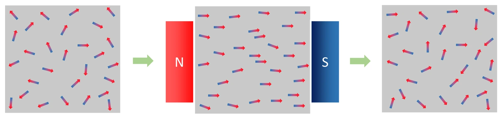

대학 전자기학 랩 11 · 자성체
자석의 정체 — 상자성·반자성·강자성과 히스테리시스
실험에서 상자성체의 자화 M = M_s tanh(μB/k_BT)를 장과 온도에 대해 재고, 강자성체의 평균장 자기 일관 해로 퀴리 온도 아래에서 자발 자화가 (1 − T/T_c)^(1/2)처럼 자라는 것을 보았으며, 자기 구역 배열에 H를 스윕해 히스테리시스 루프를 그렸습니다. 상자성은 H에 선형으로 오르다 포화하고 온도를 올리면 1/T로 줄었으며, 반자성은 χ가 음수이고 온도에 거의 무관했습니다. 강자성은 T > T_c에서 M = 0, 아래에서 자발 자화가 생겼고, 히스테리시스에서는 잔류 자화 M_r과 보자력 H_c가 남으며 각 계단이 구역 하나의 뒤집힘(바크하우젠 점프)이었습니다. 세 자성의 기원, 퀴리 법칙과 평균장, 루프의 의미와 재료 설계를 정리합니다.
- 실험: 자화 곡선·루프
- 과학 원리
- 자습 노트
- 다음: 전자기파
실험에서 얻은 것
실험 데이터 되짚기
모형: 상자성 M = M_s tanh(μB/k_BT)(스핀 ½); 강자성 평균장 M = M_s tanh[μ(B + λM)/k_BT] 자기 일관 해(T_c = μλM_s/k_B); 히스테리시스: 구역별 임계장이 분포된 스핀 배열을 H 스윕하며 뒤집기. 히스테리시스 매개변수는 원리 설명용 임의값.
| 물질 / 상황 | χ = M/H | H 의존 | 온도 의존 | 기원 | 실험 관찰 |
|---|---|---|---|---|---|
| 상자성 | 작은 양수 (10⁻⁵~10⁻³) | 선형 → 포화 (tanh) | χ ∝ 1/T (퀴리 법칙) | 짝 없는 스핀의 정렬 vs 열운동 | T 2배 → 같은 H에서 M 절반 |
| 반자성 | 작은 음수 (−10⁻⁵) | 선형, 장을 밀어냄 | 거의 무관 | 궤도 전류의 유도 반응 (라모) | χ < 0, 온도 바꿔도 그대로 |
| 강자성, T > T_c | 큰 양수, χ ∝ 1/(T − T_c) | 상자성처럼 | T_c 넘으면 자발 자화 소멸 | 교환 상호작용 < 열 | H = 0에서 M = 0 |
| 강자성, T < T_c, H = 0 | — | 자발 자화 | M_s(T) ∝ (1 − T/T_c)^(1/2) (평균장) | 교환 상호작용이 스핀을 나란히 | 온도 내리면 M 자람 (2차 상전이) |
| 히스테리시스 루프 | — | H ↑ 후 ↓: 잔류 자화 M_r, 보자력 H_c | — | 자기 구역의 비가역 뒤집힘 | 계단 = 바크하우젠 점프, 루프 면적 = 사이클당 열 손실 |
| 연자성 (규소강·페라이트) | 매우 큼 | 좁은 루프 | — | 구역 벽 이동 쉬움 | 변압기·모터 철심 (손실 작음) |
| 경자성 (NdFeB) | — | 넓은 루프, H_c 큼 | — | 구역 고정 | 영구자석·정보 저장 |
평균장(바이스) 이론은 T_c 근처 임계 지수를 정확히 주지 못하고(실제 M ∝ (T_c − T)^0.33), 히스테리시스 모형의 구역 수·문턱·M_r·H_c 값은 특정 재료의 실측값이 아닙니다. 자석을 T_c 이상으로 가열하면 자성이 사라집니다(철 770 ℃).
개념 정리
1. 세 가지 자성의 기원
물질의 자기 반응은 원자 스핀(자기 모멘트)이 외부 장 H에 어떻게 반응하느냐로 갈립니다. 상자성: 짝 없는 스핀이 장 방향으로 정렬하려 하지만 열운동이 흩뜨려 M = M_s tanh(μB/k_BT)(스핀 ½; 일반 J는 브릴루앙 함수, 고전 극한은 랑주뱅)로 약하게 정렬하고, 약한 장에서 χ ∝ 1/T(퀴리 법칙), 강한 장·저온에서 포화합니다. 반자성: 모든 물질이 가진 궤도 전류의 유도 반응(라모 반자성, 렌츠 법칙의 원자판)으로 장과 반대 방향이고 매우 약하며 온도에 거의 무관 — 상자성·강자성 물질에서는 더 큰 기여에 가려지고, 초전도체의 완전 반자성이나 금속의 란다우 반자성처럼 기작이 다른 경우도 있습니다. 강자성: 이웃 스핀 사이 교환 상호작용(양자역학적, 파울리 원리에서 기원)이 스핀을 나란히 묶어 외부 장 없이도 자발 자화가 생기고(자기 구역), 퀴리 온도 T_c 이상에서 열이 이겨 상자성이 됩니다. 평균장 이론은 이웃의 영향을 유효장 λM으로 대신해 M = M_s tanh[μ(B + λM)/k_BT]를 자기 일관적으로 풀며(랩 09의 자기 일관 해와 같은 구조), H = 0에서 T < T_c = μλM_s/k_B일 때만 0이 아닌 해가 생겨 M ∝ (1 − T/T_c)^(1/2)로 자랍니다(2차 상전이).
교재 그림
상자성 — 장이 있을 때만 정렬

N극에서 S극 쪽으로 향하는 외부 장 안에서는 원자 자석들이 장 방향으로 어느 정도 정렬하지만, 장을 없애면 열운동 때문에 다시 제멋대로 흩어집니다(실제로는 부분 정렬이며 그림은 단순화).
움직여 보기
평균장 이론 — 두 곡선이 만나는 곳이 자화
t = T/T_c, h = μB/(k_B T_c). 강자성에서 h = 0이어도 t < 1이면 직선과 곡선이 0이 아닌 곳에서 한 번 더 만나 자발 자화가 생깁니다: t = 0.5 → 0.957, t = 0.9 → 0.525. T_c 근처에서는 M/M_s ≈ √3(1 − t)^(1/2)입니다. 상자성은 평균장이 없어 m = tanh(h/t) — 약한 장에서 온도를 2배로 하면 M이 절반(퀴리 법칙).
2. 히스테리시스 — 과거를 기억하는 자석
거시적 자석은 여러 자기 구역(도메인)으로 나뉘어 있고, H를 올리면 장 방향 구역이 벽 이동으로 커지다 각 구역이 뒤집히는 과정이 결함·응력에 걸려 비가역적이라 H를 내려도 M이 0으로 돌아오지 않습니다: 남는 것이 잔류 자화 M_r, 0으로 만드는 데 필요한 반대 장이 보자력 H_c. 실험 루프의 각 계단은 구역 하나가 뒤집히는 바크하우젠 점프이고, 루프 면적 = 한 사이클마다 열로 버려지는 에너지(단위 부피당)입니다. 그래서 변압기·모터 철심은 루프가 좁은 연자성체(규소강·페라이트)로 히스테리시스 손실과 와전류 손실을 줄이고, 영구자석은 루프가 넓은 경자성체(NdFeB, 보자력 ~10⁶ A/m)를 씁니다. 하드디스크·자기 테이프·신용카드 띠는 잔류 자화로 정보를 저장하고, 고온에서 지운 뒤 다시 자화하는 것이 열 자기 기록입니다. 랩 09의 탈분극 인자는 자성체에서 반자기 인자로 같은 형태로 나타나 시료 모양이 겉보기 자화 곡선을 바꿉니다.
교재 그림
강자성 — 자기 구역이 정렬하고 남는다

처음에는 구역마다 방향이 달라 전체 자화가 거의 0이지만, 외부 장을 걸면 구역들이 장 방향으로 정렬하고 장을 없애도 많은 구역이 그대로 남습니다. 이것이 잔류 자화예요.
움직여 보기
자기 구역이 하나씩 뒤집히며 그리는 히스테리시스
H를 −1 → +1 → −1로 바꾸면 구역마다 문턱이 달라 하나씩 뒤집히는 계단(바크하우젠 점프)이 생기고, 올라갈 때와 내려갈 때 길이 달라 고리가 됩니다. 초록 동그라미가 H = 0에 남는 잔류 자화, 주황이 M을 0으로 만드는 보자력입니다. 경자성은 고리가 넓어 손실이 크지만 자화를 잘 지킵니다. 문턱 값은 원리 설명용 임의값입니다.
3. 모형과 실제
평균장 이론은 T_c 근처 임계 지수를 정확히 주지 못하고(실제 3차원 하이젠베르크 M ∝ (T_c − T)^0.33), 저온 스핀파 효과(M_s − M ∝ T^(3/2))도 없습니다. 히스테리시스 모형은 구역 상호작용·벽 이동·결함 고정을 단순화한 것이라 실제 루프 모양·보자력은 재료 미세 구조(결정립 크기·불순물·응력)가 정합니다. 반강자성(MnO)·페리자성(페라이트 — 부분 상쇄로 약한 강자성처럼)·스핀 유리 등 다른 자기 질서는 다루지 않았습니다. 지구 자기장의 역전 기록(고지자기, 지구시스템 실험 03)은 암석의 잔류 자화가 남긴 히스테리시스의 흔적입니다.
상자성 χ ~10⁻⁵~10⁻³, 반자성 ~−10⁻⁵ · 철 T_c 770 ℃ · 임계 지수 평균장 0.5 vs 실제 0.33 · NdFeB H_c ~10⁶ A/m
“χ가 음수 — 장을 밀어냅니다. 온도에 거의 무관합니다.” “퀴리 온도를 넘어 자발 자화가 사라졌습니다. 지금은 상자성처럼 행동합니다.”
실험 데이터 확인 탭 · 반자성과 퀴리 온도
예제
상자성 시료에서 300 K·B = 1 T일 때 M/M_s는?(μ = μ_B = 9.27 × 10⁻²⁴ J/T, k_B = 1.38 × 10⁻²³) 4 K에서는?
x = μB/k_BT = 9.27 × 10⁻²⁴/(1.38 × 10⁻²³ × 300) = 2.24 × 10⁻³ → M/M_s = tanh x ≈ 0.0022(선형 영역, 퀴리 법칙). 4 K: x = 0.168 → tanh = 0.167(포화 시작). 4 K·10 T면 x = 1.68 → 0.93.
평균장 모형에서 T = 0.5 T_c와 0.9 T_c일 때 자발 자화 M/M_s의 근삿값은? T_c 근처에서 실제 지수 0.33이면 0.9 T_c에서?
평균장의 T_c 근처 근사는 M/M_s ≈ √3·(1 − T/T_c)^(1/2)입니다. 0.9 T_c: √3 × 0.1^(1/2) = 약 0.55(tanh 자기 일관 해를 정확히 풀면 0.53). 0.5 T_c는 T_c에서 멀어 이 근사가 맞지 않고, 자기 일관 해로 풀면 약 0.96입니다. 실제 지수 0.33이면 0.1^0.33 = 0.47 — 지수만 비교하면 평균장(0.1^0.5 ≈ 0.32)보다 T_c 아래에서 자화가 더 빨리 커지지만, 앞의 계수까지 따지면 크기를 바로 비교할 수는 없습니다.